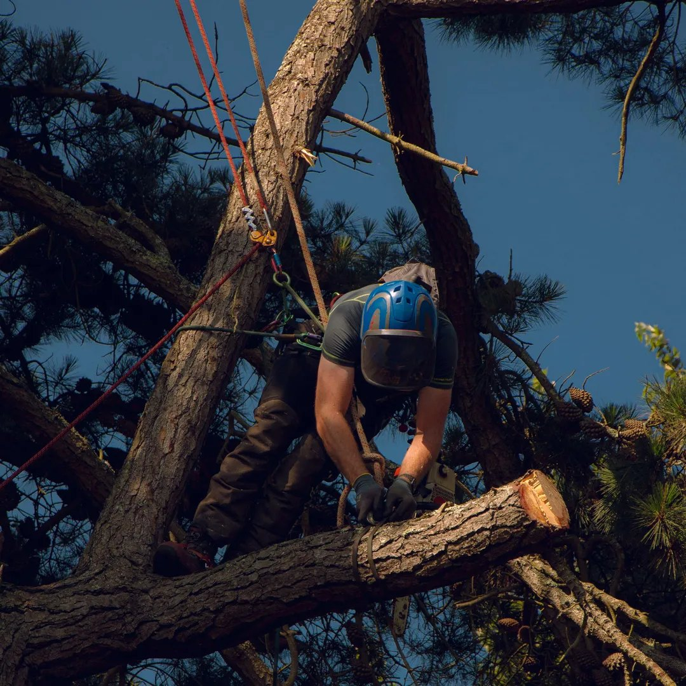
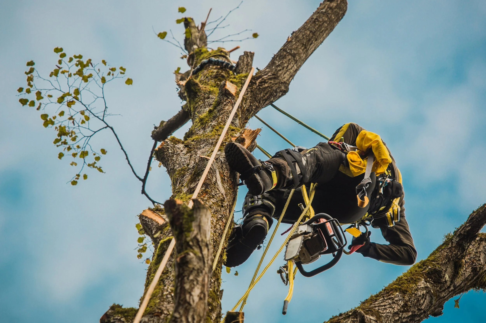
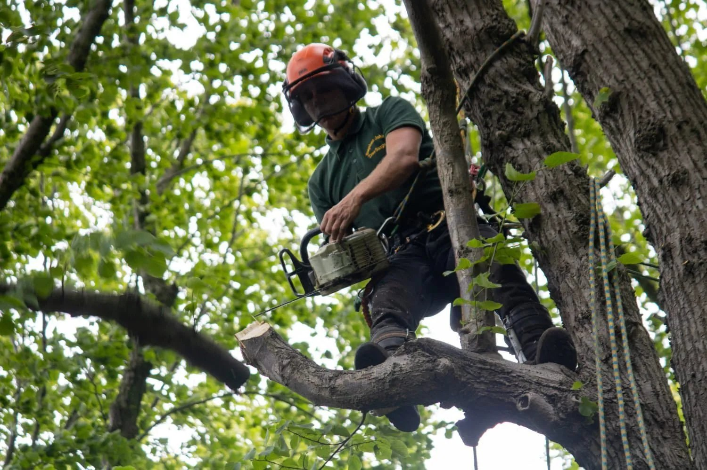
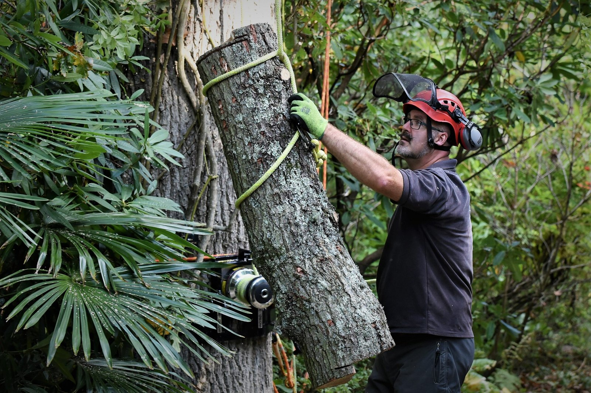
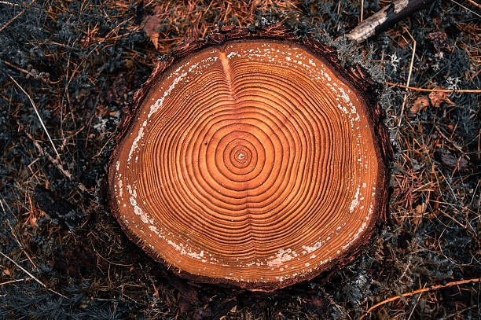

地上 約25m
手順 一切る前に、まず吊ります
順番が逆です。チェーンソーを入れる前に、切る枝へロープをかけ、落ちる先と降ろす道筋を決めます。枝がどこへ行くか分からないまま切ることは、決してありません。
この一手間があるからこそ、屋根の真上でも、植木の上でも切ることができます。

クレーンが入らず、倒す余地もない場所でも、木を始末しなければならないことがあります。そのときは、ロープで木に登り、枝を吊って、上から少しずつ降ろしていきます。実際には30メートル前後まで登ることもございます。それが特殊伐採です。
通常の伐採は、木を根元から倒します。特殊伐採はその逆で、人が木の上部まで登り、上のほうから解体していく方法です。切った枝や幹はその場に落とさず、すべてロープで吊って降ろします。家の真上や電線のそば、隣の敷地との境い目など、落とせない場所ほど、この仕事の出番となります。

順番が逆です。チェーンソーを入れる前に、切る枝へロープをかけ、落ちる先と降ろす道筋を決めます。枝がどこへ行くか分からないまま切ることは、決してありません。
この一手間があるからこそ、屋根の真上でも、植木の上でも切ることができます。

一度に切り離すのは、人が抱えられる大きさまでに限ります。樹冠の枝から順に、幹は輪切りにしながら、少しずつ木を低くしていきます。
大きな木ほど時間がかかりますが、この「少しずつ」が事故を防ぐ一番の方法です。

切った材はロープで受け止め、地上の作業員が声をかけながら誘導します。屋根も、塀も、庭石もかすめることなく降ろします。最後の一本が地面に着くまでが、空の仕事です。
「これは、どうやって切るのだろう」と思うような木は、大抵が特殊伐採の対象です。たとえば、次のような木です。
家の間や狭い庭、路地の奥など、倒す方向に空きがない木は、上から解体していくしかありません。
枝が屋根の上まで伸び、電線に触れているなど、落とせば壊れてしまうものが真下にある木です。
幹の中が空洞になっていたり、根元が腐っていたりする木です。放っておくと台風で倒れるおそれがあるため、倒れる前に始末します。
重機を横付けできない場所です。人はロープで入ることができますので、足場の悪い場所ほど向いています。
枝が境界を越えて伸びてしまった木です。作業の前に、お隣への声かけの進め方も含めてご相談に乗ります。
誰も住んでいない家の庭木が、建物より大きくなってしまった木です。遠方にお住まいの方からのご依頼も多い仕事です。
作業の日は、木の上と地面で声をかけ合いながら、一本の木を上から順に無くしていきます。
ロープを樹冠にかけ、胸元のロープランナーで昇降を支えながら、道具を持って登ります。実際には30メートル前後まで登ることもございます。登る前の道具点検と、木の状態の確認が最初の仕事です。
樹冠の枝から順に、ロープで吊って切り離し、地面へ降ろします。下にあるものを避けながら、一枝ずつ。
枝が無くなったら幹だけが残ります。輪切りにしてはロープで降ろし、少しずつ背を低くしていきます。
手で扱える高さまで下がったら、残りを根元から倒します。ここまで来れば、ふつうの伐採と同じです。
切った材の搬出、枝葉の処分、周りの清掃まで。切り株をどうするかは、事前の相談で決めておきます。

特殊伐採には「一本いくら」という言い方がなじみません。同じ高さの木でも、下に屋根があるかどうかで手間が大きく異なるからです。お見積は、次の点を確認して作成します。
高いほど、太いほど、切る回数と降ろす回数が増えます。登る前の見立てで、おおよその目安はお伝えできます。
屋根、電線、庭木、石灯籠などです。守るものが多いほど、一つひとつを小さく、慎重に降ろすことになります。
切った材を車まで運ぶ距離と、道の状態です。路地の奥や坂道では、その分の人手がかかります。
切り株を残すか、掘り起こすかによっても変わります。材や枝葉の処分の方法でも変わります。薪として残される方もおられます。
現地確認とお見積は無料です。「いくらぐらいか」という目安だけでも、木の写真をLINEで送っていただければお答えします。お見積のあと、ご依頼になるかどうかはゆっくりお決めください。
木の場所と、困っていることを教えてください。写真があると話が早いです。
まず写真から、おおよその金額と作業内容をご案内します。写真だけでは判断できない場合に限り、概算をお伝えしたうえで現地を確認し、見積内容を詰めます。
近隣への挨拶をしてから始めます。雨や強風の日は、安全のため順延します。
搬出と清掃が終わったら、一緒に仕上がりを確認していただいて完了です。
できます。特殊伐採の道具は、人の背中で運べるものばかりです。車が入れなくても、人が入れる場所であれば、大抵は作業できます。
枝は必ずロープで吊ってから切ります。切り離した枝が自由に落ちる場面は作りません。それでも万一に備えて保険には入っていますし、作業前には近隣へご挨拶に伺います。
大丈夫です。現地確認・見積は無料ですし、写真だけの概算ならLINEでもお答えします。見積のあとに断っていただいても構いません。
基本的には搬出して処分まで行います。良い材は薪として残すこともできますので、ご希望があればお見積のときに教えてください。
木の上での仕事は、濡れると足元が滑って危険です。雨や強風のときは無理をせず、日を改めます。その場合は、前日までにご連絡します。
伐採では地際で切りますので、切り株は残ります。掘り起こしてなくすこともできますが、手間がかかりますので、別途のお見積になります。
木の始末は、場所と高さでやり方が変わります。竜樹伐採では仕事を三つに分け、それぞれ専用のページで詳しくご紹介しています。
「切れるのだろうか」と思っている段階で大丈夫です。写真を送っていただければ、切れるかどうかと、おおよその目安をお答えします。
作業中は出られないことがあります。折り返しますので、留守番電話にひと言残してください。
LINEでのご相談は、上のボタンを押して友だち追加のうえ、木全体が写った写真と、木のある場所をお送りください。写真から対応の可否と概算の金額をご案内します。写真だけでは判断できない場合は、概算をお伝えしたうえで現地確認の日程をご相談します。
対応エリアは、奈良市を中心に近隣の市町村までです。遠方の空き家についてのご相談も承ります。